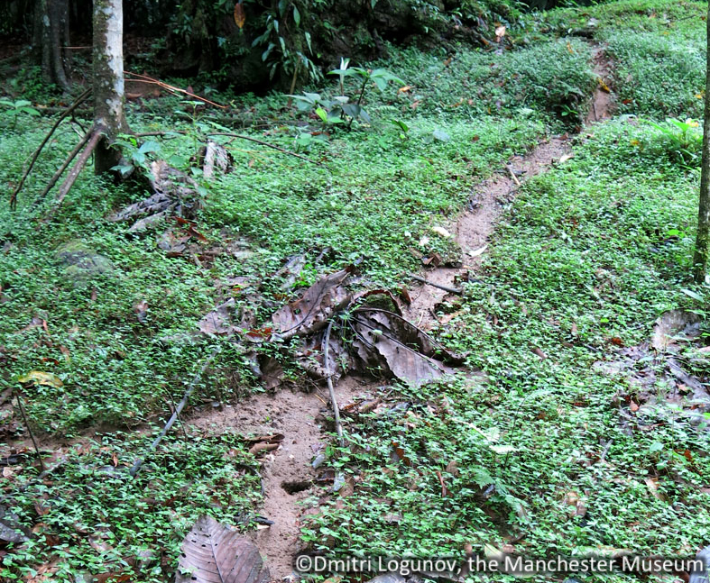
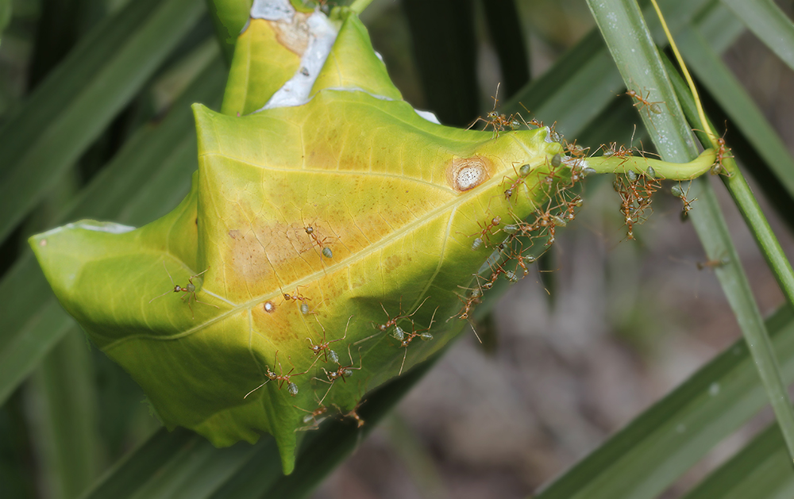

Research

Leafcutter ants, unlike most other ant species, clear their trails. By removing all undergrowth and by even flattening the ground, they greatly increase their speed of movement and overall resource transport. With networks reaching kilometers in length, leaf cutter ants produce one of the most complex infrastructure in the animal world
Yet some trails remain uncleared. Clearly, there is a decision being made whether or not a trail should be cleared.
For my PhD project, I investigate the self-organisation dynamics behind making this decision, and the mechanism of the actual removal of undergrowth and debris from the trails.
My tool set to address these questions encompasses self-written image processing methods, statistical analysis and mathematical modeling.
For media coverage of the project visit the Smithsonian Tropical Research Institute and the Monash Faculty of Information Technology.
As this is ongoing research, more content will follow as results are published.
Collective Nest construction and chain formation in the weaver ant Oecophylla smaragdina

Weaver ants are an arboreal ant species, living inside conspicuous nests made up from living leaves. Construction of these nests requires the coordinated effort of a large workforce: first, leaves are communally bent and folded into position, before workers carrying larvae arrive. These larvae produce silk, and, as the workers move the larvae like weaver's shuttles between the leaves, a growing white silk sheet joins the new nest together.
Nest construction in social insects is a classical example for collective behaviour. Without a blueprint, knowledge of the entire environment, or communication with the rest of the builders, ants frequently construct nests millions of times their own size. How do individual workers with a very limited sensory and physical capacity know which task to perform, and where?
Surprisingly, collected colonies will use artificial materials like paper or a thin plastic sheet to construct a nest. In the lab, I offered colonies leaves of different properties and observed the nest construction. Focus of my interest was how weaver ants collectively make a decision for a new nest site, and how they manage the feat of rolling up leaves much too sturdy for any individual: as in a tug-of-war, workers form into long organised pulling chains, thereby mustering the necessary force to bend leaves into the desired assembly.
From these experiments, I find that both shape and choice of material influence the selection of a suitable leaf. Sturdy leaves are ignored; on flexible leaves, workers are attracted to prominent tips. There, pulling chains form more frequently, persist longer, and achiever greater success in rolling up the leaves.
Details are published here; a video illustrating nest construction dynamics can be
found here